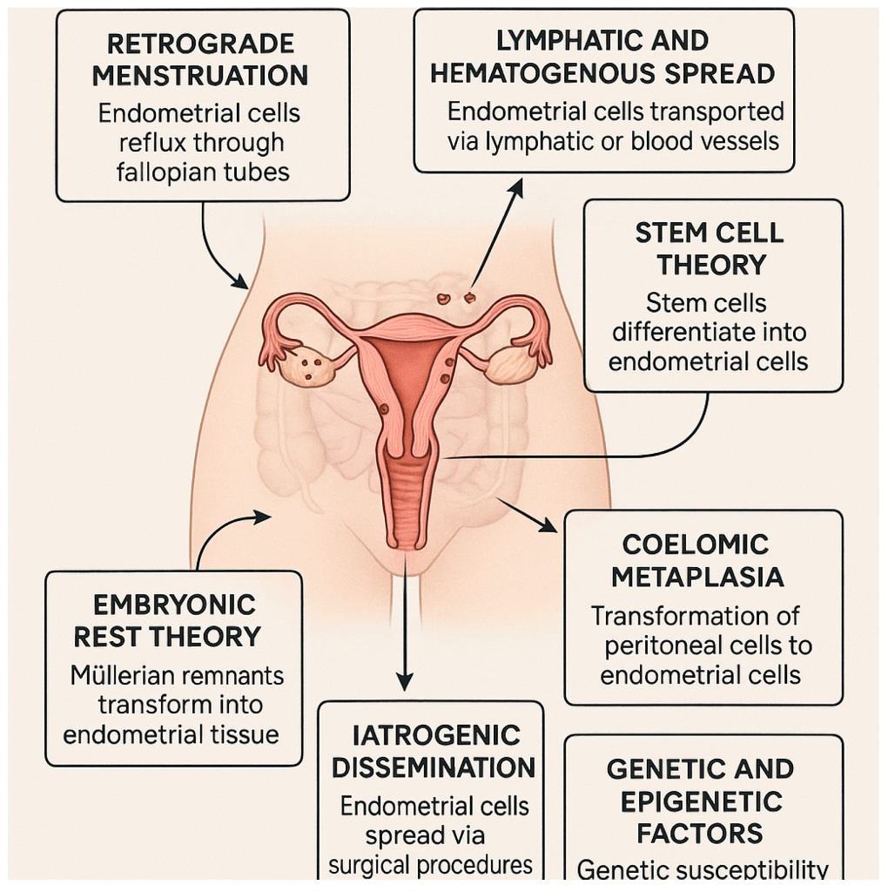
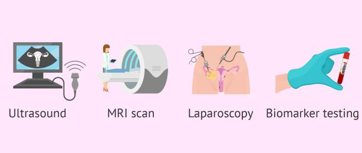
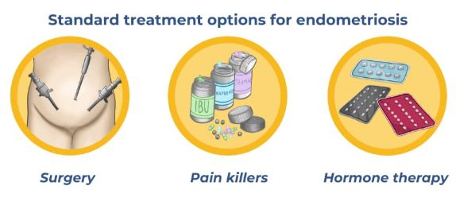

Guide
What is Endometriosis ?
Endometriosis is a chronic condition that affects around 176 MILLION women worldwide — about 1 in 10 women and girls of reproductive age, according to the World Health Organization (2025).
It occurs when tissue similar to the lining of the uterus (the endometrium) grows outside the uterus — commonly on the ovaries, fallopian tubes, bowel, bladder, or pelvic lining. This tissue behaves like normal endometrium: it thickens and responds to hormones during the menstrual cycle. But because it has no way to leave the body, it can cause inflammation, irritation, scarring, and adhesions, making organs stick together painfully.

Pain: the most common — and misunderstood — symptom
Pain is the symptom most people associate with endometriosis, but it can feel very different from person to person.
Many women describe:
• Deep pelvic pain
• A throbbing or stabbing ache in the lower belly, lower back, hips, or thighs
• Pain that becomes much worse before and during periods
For many, period pain isn’t “just cramps.” Severe menstrual pain (dysmenorrhea) can be debilitating and often starts in the teenage years. This pain is frequently dismissed as “normal,” which delays diagnosis and treatment.
Pain beyond periods
Endometriosis pain doesn’t always stop when the period ends. Common experiences include:
• Pain during or after sex (dyspareunia), reported by up to 70% of people with endometriosis
• Pain with bowel movements or urination, especially during periods
• Sharp, deep pain that can linger for hours or days
When endometriosis affects the bowel or bladder (called deep infiltrating endometriosis), symptoms may include:
• Bloating (“endo belly”)
• Diarrhea or constipation
• Cramping with bowel movements (dyschezia)
• Burning or pain when urinating (dysuria)
These symptoms are often mistaken for IBS or other digestive conditions.

Heavy bleeding and exhaustion
Many women experience heavy or prolonged periods (menorrhagia) with passing large clots and bleeding that interferes with daily life.
Chronic fatigue is also extremely common. This isn’t just feeling tired — it’s a deep, ongoing exhaustion that rest doesn’t fix. Pain, inflammation, poor sleep, and low iron levels often contribute.
Fertility and reproductive health
About 30–50% of women with endometriosis experience difficulty getting pregnant. Scar tissue, inflammation, blocked fallopian tubes, or ovarian cysts called endometriomas (“chocolate cysts”) can all play a role.
Other possible symptoms:
• Nausea or vomiting around periods
• Headaches or migraines linked to hormones
• Leg pain from nerve irritation
• Shoulder or chest pain (rare cases involving the diaphragm)
• Mood changes, anxiety, or depression
Rarely, endometriosis can affect areas outside the pelvis, such as the lungs or skin — but for most people, it remains within the pelvic area.
The emotional impact
Endometriosis doesn’t just affect the body — it affects every part of life like school and work, relationships and intimacy, self-confidence and mental health.
Living with unpredictable pain can feel isolating and overwhelming. Many women struggle with anxiety, depression, and the feeling of not being believed.
And if you recognize yourself in any of this — you are not imagining it. Your pain is real.
What Causes Endometriosis?
The honest answer is this: we don’t fully know yet.
Endometriosis is complex, and there is no single cause. Instead, it appears to develop from a combination of factors — different for every woman. Doctors and researchers agree on is that endometriosis is multifactorial, meaning genetics, hormones, the immune system, inflammation, and environmental influences all play a role.
Important: nothing you did caused this.
A condition shaped by inflammation and immunity
Recent large-scale studies (2025) from institutions such as UC San Francisco, Oxford, and Yale suggest that endometriosis is closely linked to immune and inflammatory pathways. These studies also show overlap with other conditions like migraines, Crohn’s disease, autoimmune disorders, anxiety, and depression — helping explain why endometriosis often affects the whole body, not just the pelvis.
This growing evidence is shifting how we understand endometriosis: not just as a gynecological condition, but as a systemic inflammatory disease.
Retrograde menstruation: one piece of the puzzle
One of the earliest and most well-known theories is retrograde menstruation, first described in 1927. During menstruation, some blood flows backward through the fallopian tubes into the pelvic cavity, carrying endometrial-like cells with it.
This happens in most women — but in people with endometriosis, the body doesn’t clear these cells properly. Instead, they attach, survive, and continue to grow.
When cells change or travel
Other theories help explain cases that retrograde menstruation alone cannot:
• Metaplasia theory: cells lining the abdomen may transform into endometrial-like tissue under the influence of hormones or inflammation
• Stem cell theory: embryonic or bone marrow stem cells may migrate and develop into endometriosis tissue
• Lymphatic or blood spread: cells may travel through blood or lymph vessels to distant areas, such as the lungs
These theories help explain why endometriosis can appear in unexpected places — and even, very rarely, in men or before puberty.
Genetics: a strong influence
Genetics play a major role. If your mother or sister has endometriosis, your risk increases six to ten times. Recent genetic studies have identified variations in genes involved in inflammation, immune response, hormone signaling and tissue adhesion.
The immune system, which should spot and clear these out-of-place cells, doesn’t work as it should: natural killer cells fail to destroy them, while other immune cells called macrophages actually help the tissue survive instead of removing it. This leads to ongoing low-level inflammation, driven by chemicals in the body like IL-6 and TNF-α, which encourage new blood vessels to form (angiogenesis) and create scar tissue (fibrosis).
Everyday environmental factors can make things worse—chemicals like dioxins and phthalates (found in some plastics and products) can mimic estrogen or weaken the immune system. An unbalanced gut microbiome can add to whole-body inflammation, while oxidative stress and changes in how genes are switched on or off (epigenetics) also contribute.
Recent research from 2025 shows stronger links to autoinflammatory and autoimmune conditions, such as a possible connection with rheumatoid arthritis, opening doors to repurposing existing drugs.
In the end, endometriosis likely starts with retrograde menstruation (cells flowing backward), combined with genetic vulnerability, immune system glitches, hormonal imbalance, and environmental triggers. The more we understand these pieces, the closer we get to new, non-hormonal treatments that target inflammation or the immune response directly—offering hope for gentler, more effective options.
Researchers have also found shared genetic links between endometriosis and autoimmune conditions (like rheumatoid arthritis or multiple sclerosis), as well as mental health conditions — reinforcing that this disease affects the whole system. The main driver is estrogen—it acts like fuel, helping the misplaced tissue grow and spread. At the same time, the body often becomes resistant to progesterone (the hormone that normally keeps things in balance), so the tissue doesn’t respond properly and keeps building up.
Hormones and immune imbalance
Estrogen is a key driver of endometriosis. It acts like fuel, encouraging lesions to grow and spread. At the same time, many women develop progesterone resistance, meaning the hormone that normally balances estrogen doesn’t work as it should.
The immune system also plays a role. Cells that should destroy misplaced tissue fail to do so, while others actually help the lesions survive. This leads to chronic inflammation, scarring (fibrosis), and the growth of new blood vessels that feed the disease.
Environmental and lifestyle influences
Environmental factors may worsen or trigger endometriosis in susceptible people. These include:
• chemicals that mimic estrogen (such as dioxins or phthalates)
• chronic stress
• gut microbiome imbalances
• oxidative stress
• epigenetic changes (how genes are switched on or off)
These influences don’t cause endometriosis on their own — but they may tip the balance in an already vulnerable system.
Why this understanding matters?
New research increasingly links endometriosis to autoimmune and autoinflammatory conditions, opening the door to non-hormonal treatments that target inflammation and immune dysfunction directly.
The more we understand these mechanisms, the closer we get to treatments that are gentler, more effective, and focused on healing — not just symptom suppression.
Why diagnosis takes so long?
One of the hardest parts of endometriosis is that symptoms don’t match disease severity. Someone with minimal lesions can experience extreme pain, while others with advanced disease may have few symptoms.
Because symptoms overlap with conditions like IBS, fibroids, or pelvic infections, diagnosis is often delayed 7–10 years. Many teens and young women are told their pain is “normal,” allowing the disease to progress.
How to make a diagnose?
For many women, the road to an endometriosis diagnosis is long, confusing, and emotionally exhausting. If you’ve ever been told “everything looks normal” while knowing something isn’t right — you’re not alone.
Diagnosis usually begins with listening.
Step 1: Your story matters
The most important diagnostic tool is often a detailed conversation with your doctor. You may be asked about:
• When your pain started and how it feels
• Whether pain worsens during periods, sex, or bowel movements
• Your menstrual cycle and bleeding patterns
• Digestive or bladder symptoms
• Family history of endometriosis
• Fertility concerns
These patterns can strongly point toward endometriosis — even before any tests are done.
Step 2: Imaging tests
A pelvic exam allows the doctor to gently check for tenderness, nodules, or changes in the uterus or ovaries. However, a normal exam does not rule out endometriosis, especially in early or less advanced stages.
Step 3: Physical examination
Most doctors start with a transvaginal ultrasound. When performed by a specialist trained in endometriosis, this test can detect ovarian cysts (endometriomas) and deeper lesions. According to the ESHRE 2022 guidelines, expert ultrasound is now one of the most reliable non-invasive diagnostic tools.
If deeper involvement is suspected — such as in the bowel or bladder — an MRI may be recommended. MRI helps map the disease and is especially useful for planning treatment or surgery.
Step 4: Surgery (laparoscopy)
For many years, laparoscopy was considered the “gold standard” for diagnosis. This minimally invasive surgery allows doctors to see endometriosis lesions directly and confirm them with biopsies. If deeper involvement is suspected — such as in the bowel or bladder — an MRI may be recommended. MRI helps map the disease and is especially useful for planning treatment or surgery.
Today, laparoscopy is still the most definitive way to diagnose endometriosis, but it’s used more selectively. If imaging is clear and symptoms respond to treatment, surgery may not be necessary right away — especially when the goal is symptom management rather than confirmation alone. 
Tests that don’t work well (yet)
Blood tests like CA-125 are not reliable enough on their own. They can be normal in people with endometriosis or elevated for many unrelated reasons. Research into new markers (like microRNAs) is ongoing, but no blood test can currently diagnose endometriosis on its own.
Why the choose of a specialist matters?
Endometriosis is complex. Seeing a gynecologist with specific training in endometriosis can make a huge difference. Specialists are more familiar with subtle symptoms, advanced imaging, and individualized care — and can significantly shorten the time to diagnosis.
In adolescents and young women, early evaluation is especially important. Starting treatment sooner may help reduce disease progression and protect future fertility.
Why the choose of a specialist matters?
Endometriosis is complex. Seeing a gynecologist with specific training in endometriosis can make a huge difference. Specialists are more familiar with subtle symptoms, advanced imaging, and individualized care — and can significantly shorten the time to diagnosis.
🚨 Remember:
💛 You deserve to be believed.
💛 You deserve answers.
💛 The right doctor will hear you.
How to treat ?
There is no single treatment that works for everyone with endometriosis — and that can feel discouraging. But it also means there is space to find your own path, one that respects your body, your limits, and your life.
The most effective approach for many women is multidisciplinary: treating not just the lesions, but the whole person.
 And that's the approach that I want to share with all of you: A Whole-Body Approach to Living with Endometriosis.
And that's the approach that I want to share with all of you: A Whole-Body Approach to Living with Endometriosis.
More than symptom control
Traditional treatments often focus on suppressing hormones or managing pain. While these options can help some women, they don’t always address the deeper drivers of endometriosis — such as inflammation, immune imbalance, stress, and nervous system overload.
A holistic approach looks beyond symptom relief and asks:
• What does your body need to feel safer?
• How can inflammation be reduced gently?
• How can the nervous system be supported?
• How can daily life become more manageable and meaningful?
Building your support team
Many women benefit from working with a team that may include:
• A gynecologist or endometriosis specialist
• A pelvic floor physiotherapist
• A nutritionist familiar with anti-inflammatory approaches
• A pain specialist
• A psychologist or therapist
Mental and emotional health support is not optional — it is essential. Living with chronic pain affects mood, identity, relationships, and self-trust. Being supported emotionally is part of healing, not a sign of weakness.
The role of holistic care
Holistic treatment does not mean ignoring medical care. It means integrating tools that support the body and mind together, such as:
• Nourishing, anti-inflammatory food choices
• Gentle, consistent movement that respects pain limits
• Stress regulation and mindfulness practices
• Nervous system support
• Improving gut health and sleep quality
 For many women, this approach brings something medication alone never did: a sense of peace and control.
Choosing what fits you
Endometriosis treatment is deeply personal. What helps one woman may not help another — and that is okay. Healing is not linear, and progress can be slow. The goal is not perfection, but a life that feels more livable, supported, and aligned with your values.
Ongoing research continues to explore gentler, non-hormonal options that target inflammation and immune pathways directly — offering real hope for the future.
💛 You deserve a life beyond pain.
Carol